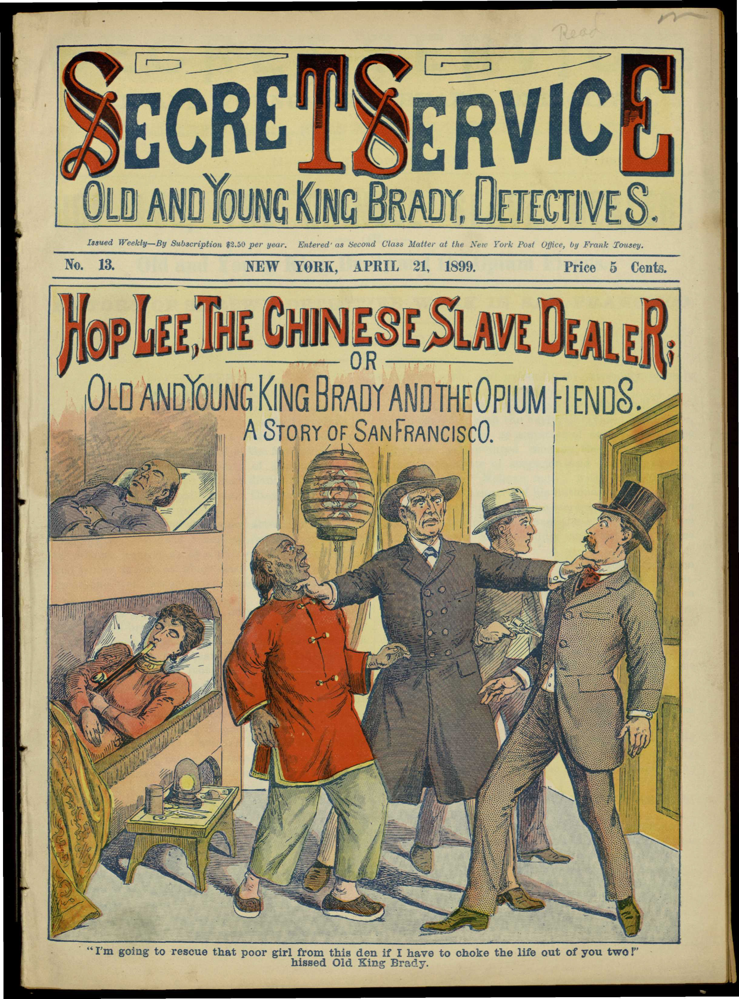
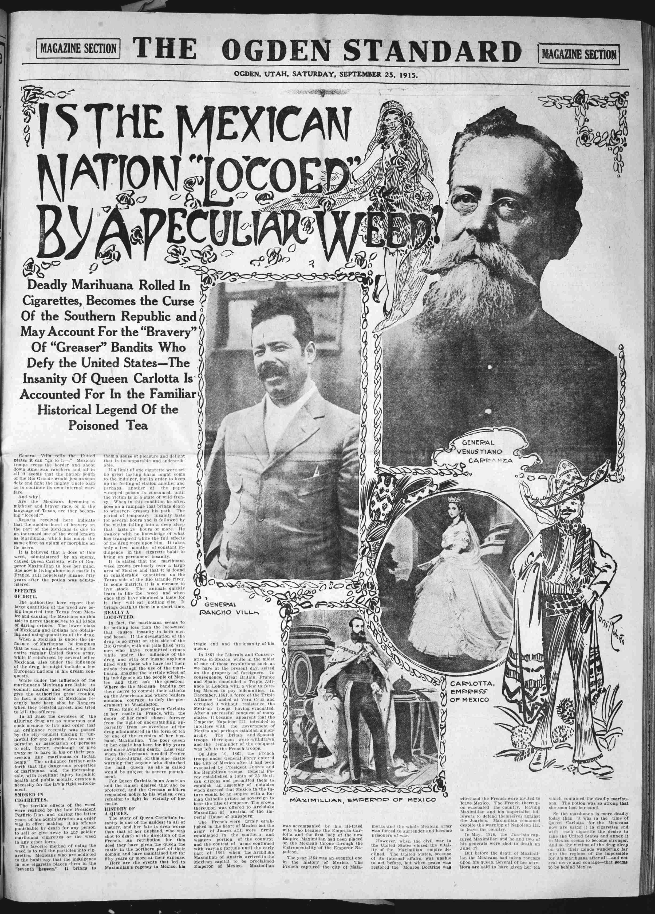
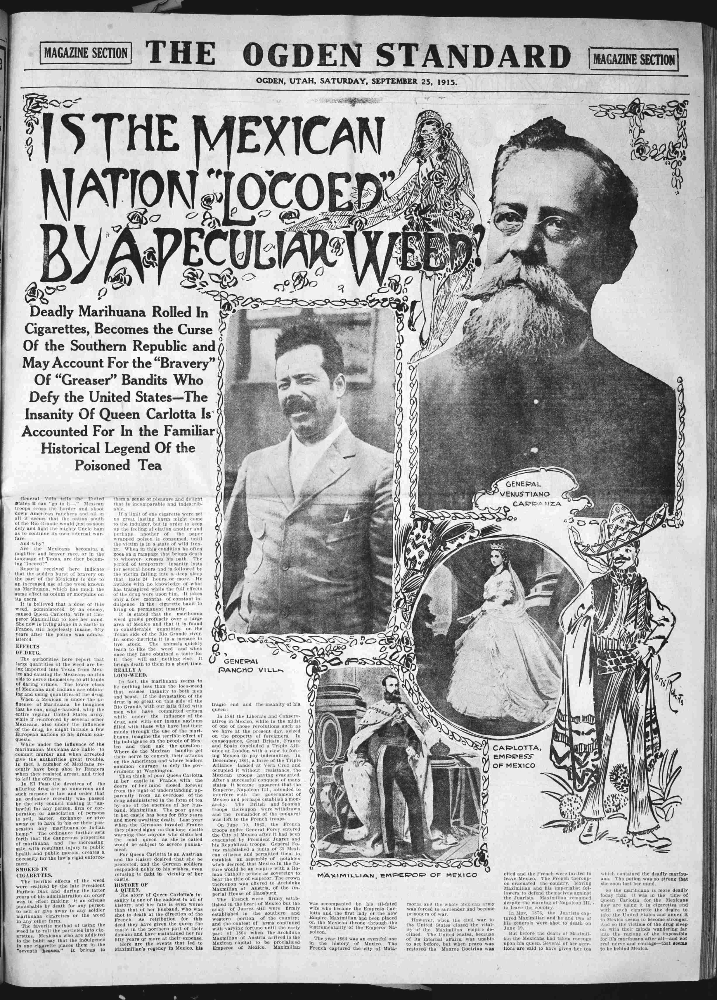
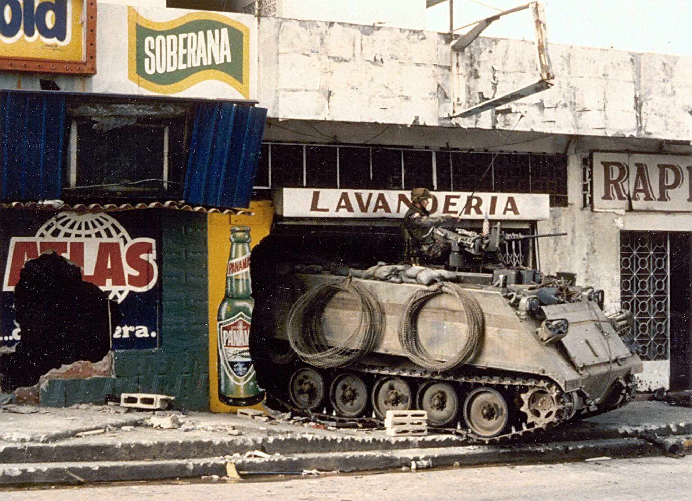
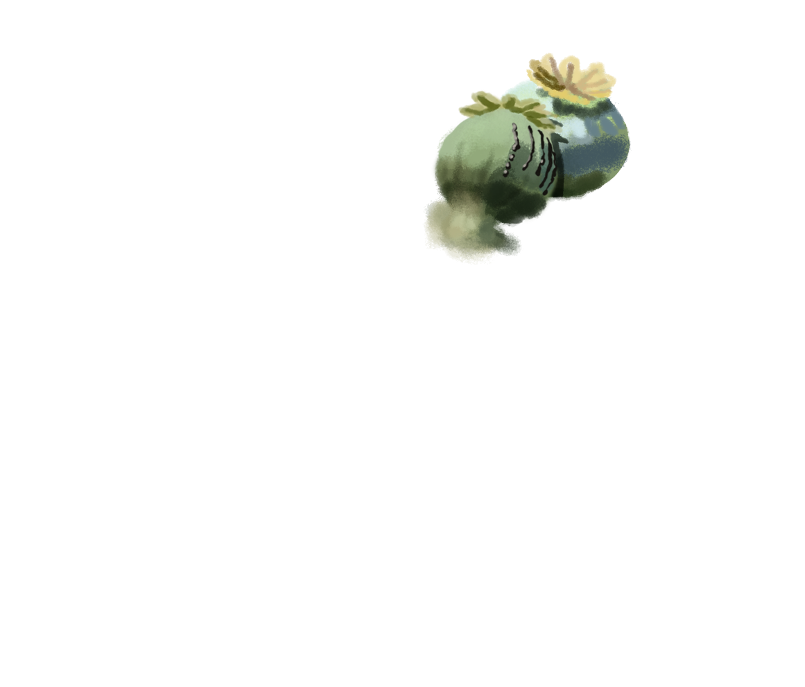
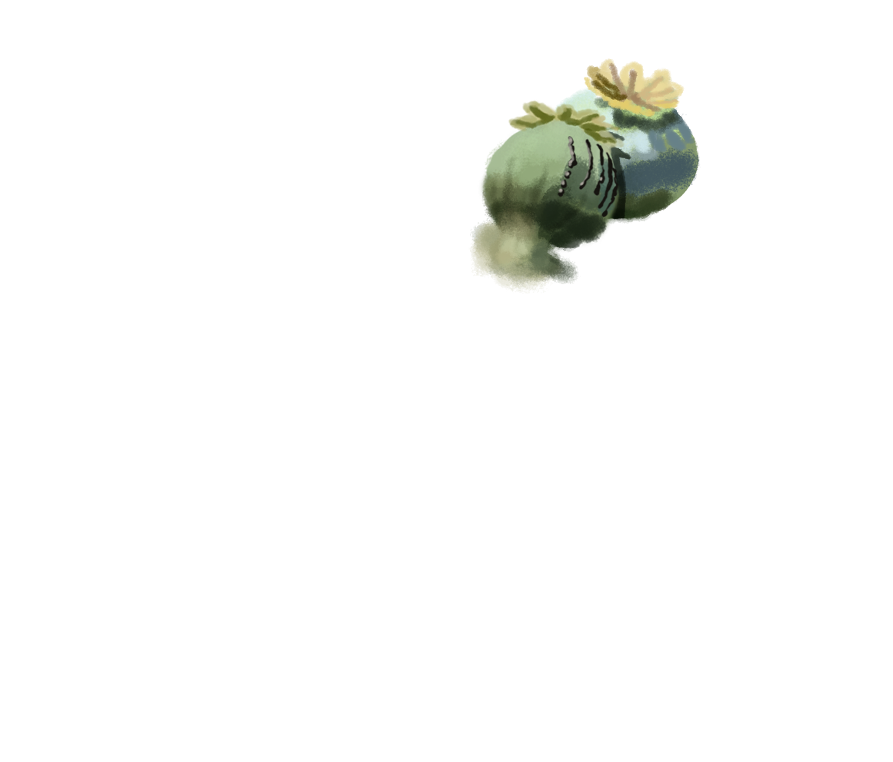
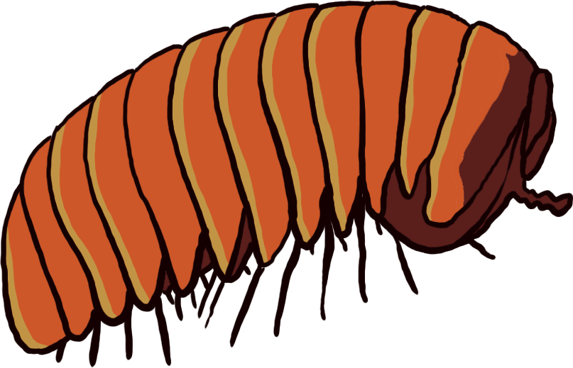
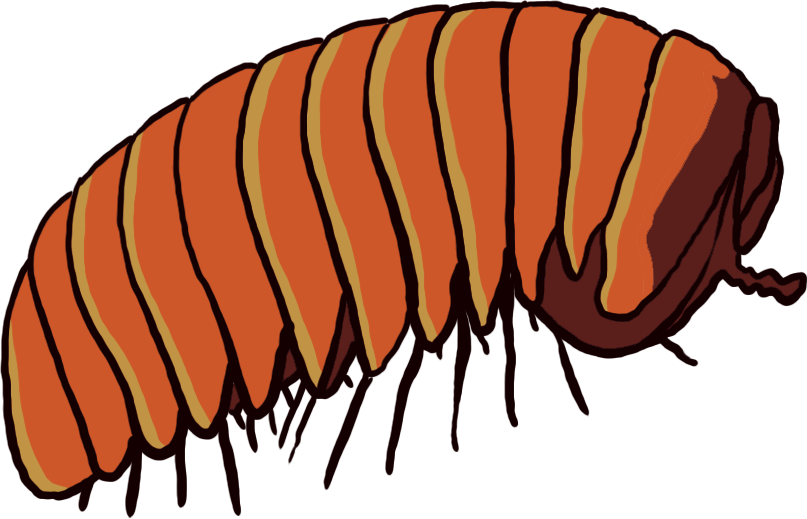

Disclaimer: This site is a work-in-progress, full of fits and starts.
This country has long espoused a view of the speech-body relationship that is sometimes fantastical, sometimes fanatical, and always hypocritical. On the one hand, we have “Just say no,” a willfully ignorant attachment to performative speech uttering, as though the sounds emitted from the mouth govern a one-to-one relationship with the substances that go in. What sort of magical thinking, or bad math, or double standard, is this, that we can believe that free speech means free bodies, or rather, that the right kind of speech makes for the right kind of body? More than anything else, this slogan shows that its advocate has a lower tolerance for heroin than for people dying.
On the other hand, we are virtuosos at divorcing mind and matter. That is why here, nothing is free, and everybody is. Free speech is the only public good, or space, that people deserve.
 It is like saying people can live on1 air.2
It is like saying people can live on1 air.2
Or on-air.
What is the difference between free for all and free fall?

Really, these are just different sides of the same hand.
Speaking of which, get your grubby hands off me!
“They are people injured at work who became addicted to opioids, eventually losing their jobs, homes and family.
“They're adults who became addicted after being prescribed painkillers for injuries sustained in a car accident as a teen.
“They are women with health conditions – perhaps they had a knee replacement, heart problems or joint pain – who became addicted in midlife.
“They are professionals who'd been to rehab and back more times than their loved ones could count.
“They are people living in daily, grinding physical and psychological pain.”1
In case you missed it, they are also, by and large, suburban whites.
In the face of mounting overdose deaths in this population, media coverage has consolidated a new genre of sorts: the overdose biography. Generally accompanied by a humanizing photo (or multiple), these accounts often go into great depth about the lost loved one's life: their wealth of academic and extracurricular activities, their friends and family, their dreams for the future — and sometimes, their struggles with dysfunctional family, mental illness, and trauma.
It’s not that the subjects of these reports didn’t lead such lives.
It’s just that, as one study found, there are “no stories of overdose deaths in black and Latino communities, although we know overdose happens in those communities as well. Rather … we found arrest stories. The only details of the individuals involved included name, age, and criminal charge. The individuals in those stories were not afforded particulars about their lives, their families, their hopes and aspirations.”2
Could it be that people who aren’t white and suburban don’t also become addicted, or don’t also lose their jobs, homes and family, or don’t also overdose, or don’t also leave behind loved ones when they die, or don’t also struggle?
So when I survey this catalogue of people whose hands I am meant to feel I could clasp without flinching,

I can’t tell if what I feel is more tender or sore.
"There was no end to what she could have become," the father of one addicted woman in suburban Massachusetts said. "Now she's locked up in a women's prison. She hasn't seen her kids in over a year. It crushed my family and it's ruined her family."
"And we don't see any end in sight.”3
Because of addiction’s intersection between choice and disease, attitudes towards it are particularly telling about not just what we think about these concepts, but with whom we associate them and how.
I will just be blunt. Illicit drugs take turns standing in for the unknown of various biopolitical subjects, an expression of their latent enmity and anti-American neurobiology — opium for the Chinaman’s fiendishness, marijuana for the Mexican’s madness, cocaine for the negro’s craze. (Catch the different tone for oxycontin, where it stands in for the Caucasian’s despair?) These narcotics mark their associated users’ exclusions from prevailing notions of futurity — these people’s conflation with the drugs is seen to reveal, rather than beget, their nonproduction, their idleness, their loitering. They are always the origin of their own downfall. They were never going anywhere, except, god willing, away.1
chinese opium

african-american cocaine


mexican marijuana
 

Another way to put this is that mind-altering substances work their spells on only a certain demographic of minds. When it comes to BIPOC, they lose their efficacy and do not alter but merely unsheathe a hereditary “nature.”
Transcript: “What you really need to do is go back in the ’30s, when they outlawed all types of drugs in Kansas [and] across the United States. What was the reason why they did that? One of the reasons why, I hate to say it, was that the African Americans, they were basically users and they basically responded the worst off to those drugs just because of their character makeup, their genetics and that.” — Republican Rep. Steve Alford of the Kansas House, 2018
(Just to be clear — genetic predispositions to addiction do2 exist,3 but unlike what goes on outside the body, they aren’t segregated along racial lines.4)
The fear of mind control and losing one’s mind is the privilege of those who can take their intellect for granted, after all. Even if such a point of view can no longer be espoused in so many words, the practical results of the criminal justice system show that there still is a line, spongy like a buffer zone, between the victim who is extenuated by circumstance, and the “accomplice to murder”5 who is profiled “into prison and throw away the key.”6
Who owns the car? Who has a driver's license?
Today, dreamless truth continues to drive the same demographic to morphine.
“Some cohorts, particularly less than college educated whites, have lost faith in the American Dream, have little hope for the future, and low levels of resilience and coping skills. This is the population that is most vulnerable to opioid overdose and other deaths of despair, while minorities, who still face objective disadvantages and discrimination, are much more hopeful and resilient.” — The Brookings Institution, 20201
“If you feel like the American dream is no longer accessible, then one may also feel that, ‘Well, it’s not really worth investing in myself ... because investing (Financially speaking, then, opioid use disorder is a wasting disease.) in yourself is one way to access the fruits of the American dream.” — The True Cause of the Opioid Epidemic2
Speaking of investment and the American Dream:
In 2015, Ohio officials began signing up inmates for Medicaid so that they could receive addiction treatment after leaving prison. The Ohio Prisons director himself supported the initiative, telling reporters, “I believe it will reduce the number of people returning to prison. Our investment Financially speaking, then, opioid use disorder is a wasting disease. is in communities, not prison. I’m not going to build another damn prison." Which begs the question — when states began their nine-fold increase on correctional spending in 1985, what was being invested in then? Or rather, whose communities were the prisons an investment for? 3

African-Americans’ cocaine use was also not neurasthenically rationalized.

“It has been authoritatively stated,” a 1910 Federal survey asserted, “that cocaine is often the direct incentive to the crime of rape by the Negroes of the South and other sections of the country.”1
The Fermi Paradox is really not much of a paradox at all. The aliens have not visited us simply because they are loathe to leave their gated cosmoses. “I’m afraid to ride the space shuttle,’’ says one indignant extraterrestrial. “You’re constantly afraid that young terrestrials are going to get on and terrorize people - rob, beat them up, even shoot people. Why should ordinary galaxens be endangered just because terrestrials live in bad conditions?’’ this commentator asks, warming to its subject. “Sure, I’m sympathetic, but my sympathy has its limits. If drugs are the main problem, why can’t responsible terrestrials keep drugs under control in their planet?”

One may accurately point out that in the current opioid crisis, the first wave of addiction and overdose was indeed set off by a pursuit of pain relief shepherded by physicians and pharma. 19th-century matronly “morphinism” was also mostly iatrogenic. Which leads us into another set of questions: Who gets to participate in the culture of medication? Who gets to be prescribed, rather than proscribed, into addiction? Who gets to descend from licit to illicit substance use? Who has access to experts, and therefore is not expected to have known any better?

And then, who gets to be prescribed out of it?

1960s, Vietnam: Defoliant spray run during the Vietnam War.

1986, Los Angeles: A Los Angeles Police Department battering ram sits next to a South LA home damaged during a police raid.

1988, Inglewood: A man suspected of buying drugs is the target of police guns after a car chase.

1988, San Marino: The body of one of two drug suspects who were shot to death during an undercover heroin investigation by the DEA lies on Monterey Road.

1989, Panama: Flames engulf a building following the outbreak of hostilities between the Panamanian Defense Force and U.S. forces on the second day of the United States Invasion of Panama Fittingly, two of the operations in the invasion were codenamed Operations Just Cause and Blind Logic..
1989, Panama: A U.S. Army M113 armored personnel carrier guards a street near the destroyed Panamanian Defense Force headquarters building during Operation Just Cause.

2006, Colombia: Two AT- 802 planes fumigate coca fields in San Miguel, 400 miles south of Bogota, as part of Plan Colombia.
2009, Afghanistan: An Afghan poppy farmer watches an AH-1W Cobra helicopter fly over his field in Farah province.

2011, Afghanistan: A corporal stands in an opium poppy field while performing a foot patrol in the town of Sangin.
Neighbors said Michael Araja, 29, was killed by two men riding by on a motorbike — a tactic sponsored by the Philippines1 police,2 who in turn received at least $14 million from the U.S. 2014-2018,3 and continue to receive funding as of this4 writing.5


 



This is a world-ending scenario I am building. It is still in progress.


 
